ONE APP. YOUR ENTIRE FARM UNDER ONE ROOF.
Touch any screen below to see in-depth analysis.
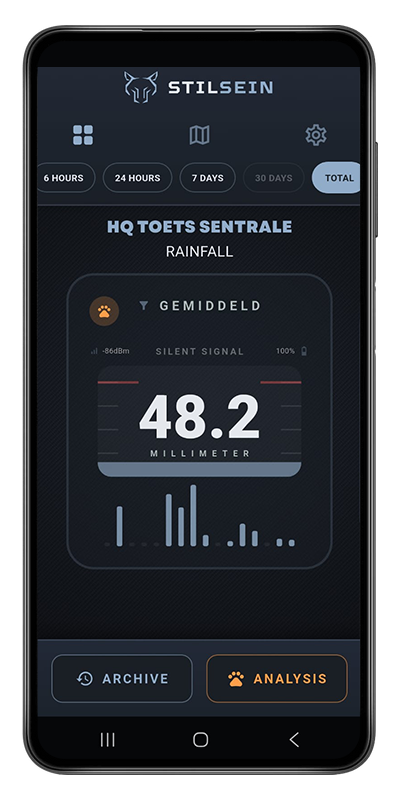
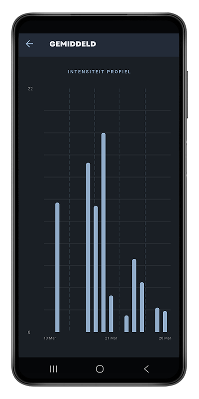
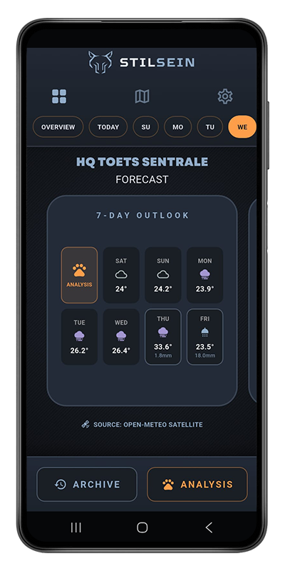
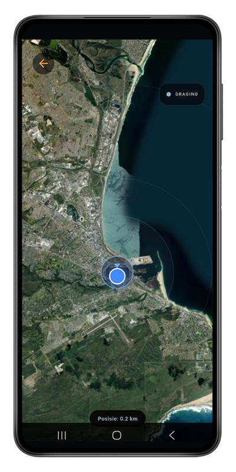
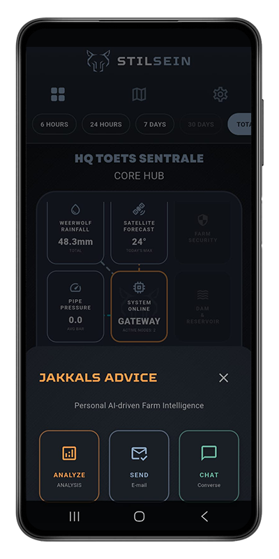
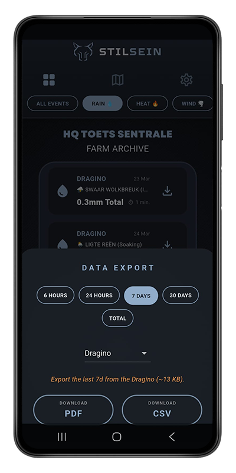
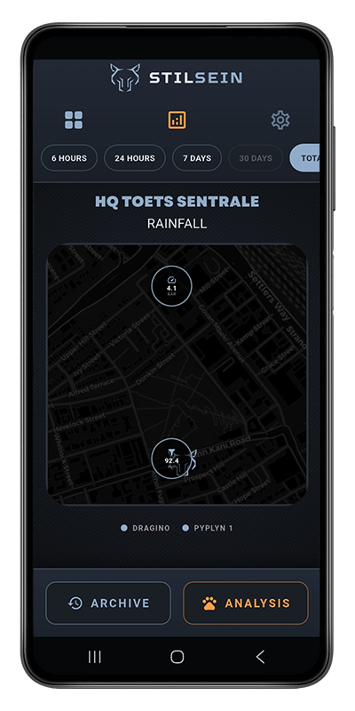

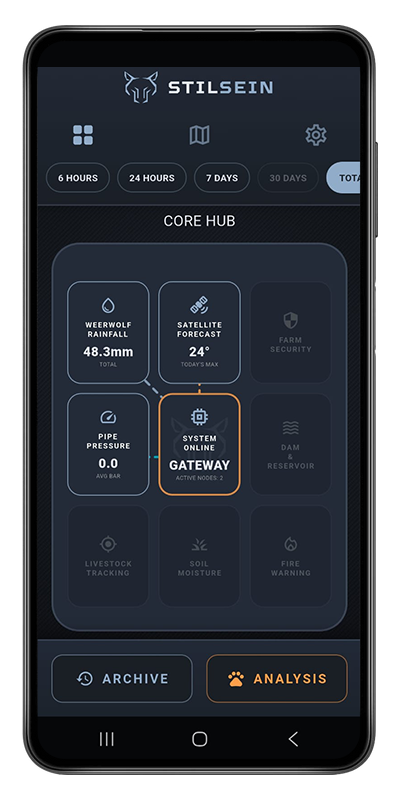
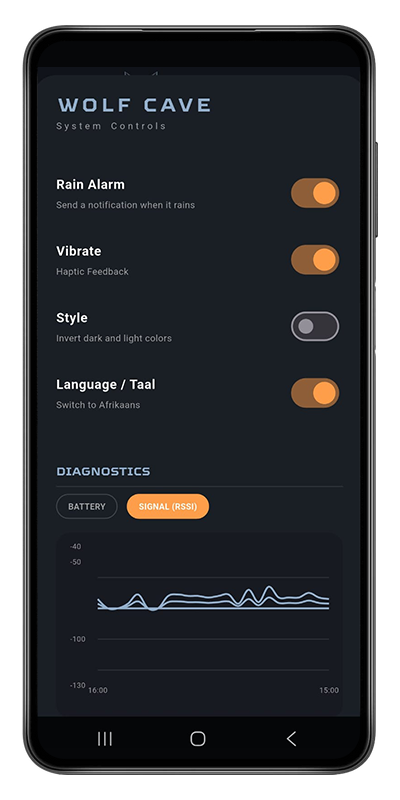
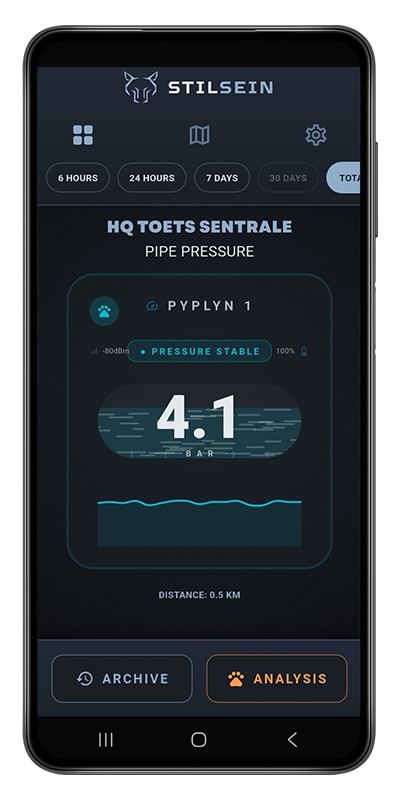
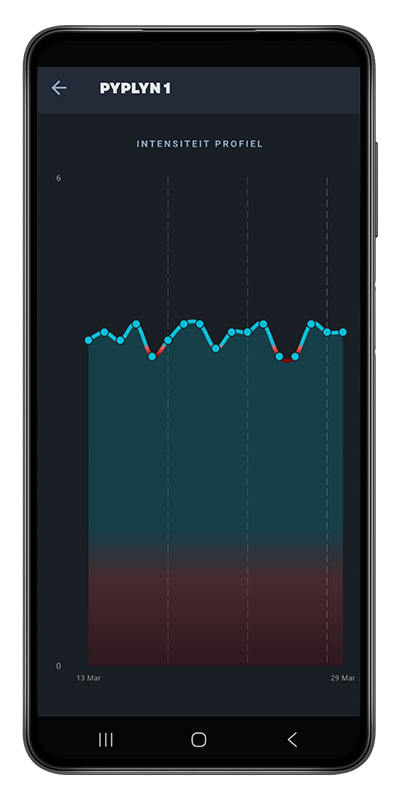
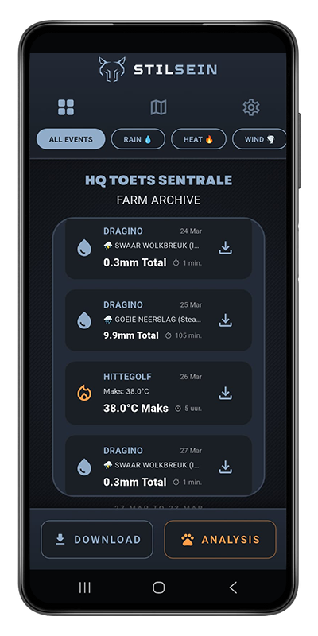
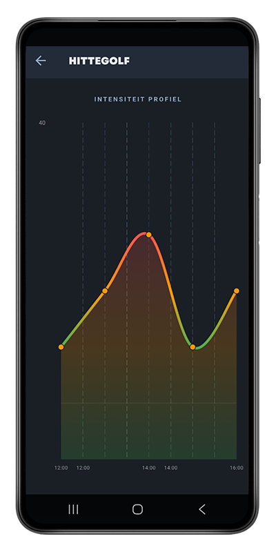
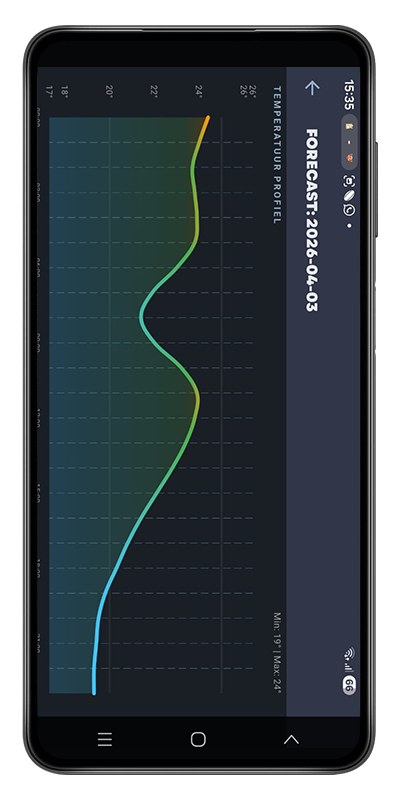
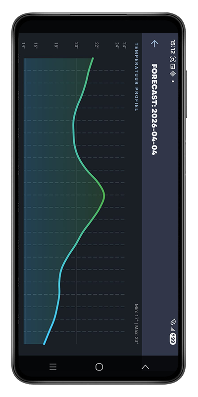
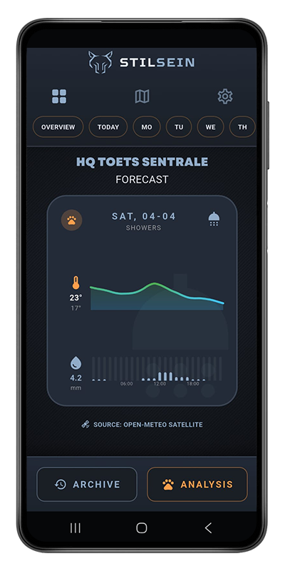
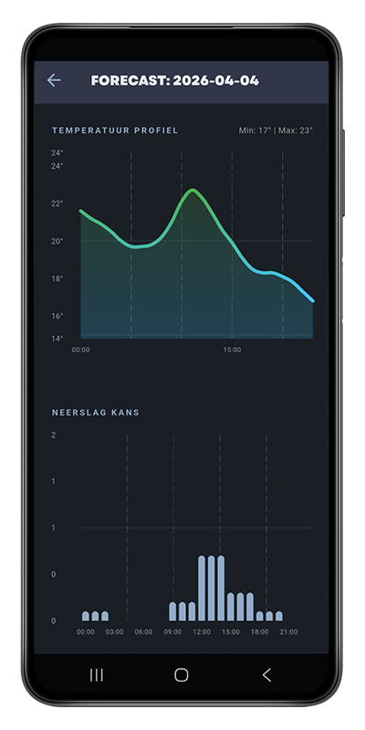
Setting up a system for just one rain gauge is pretty nice. But building a network that simultaneously monitors pipe pressure, farm gates, dam levels, and extreme weather? That changes the game.
StilSein is modular. Invest in the core infrastructure today, and add new sensors on your own time—whether that's tomorrow or in two years. Your app automatically adapts as your farm grows.
"Monitor every nook and cranny of your farm. The wolf stays awake. Know when the first drops fall, or when the pipes are running and when the top camp's gate is open. Then store everything and keep a 10-year logbook of your farm's microclimate to increase your land value."